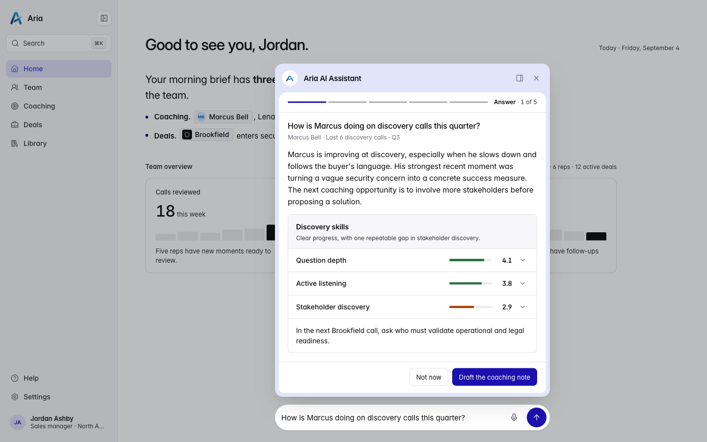
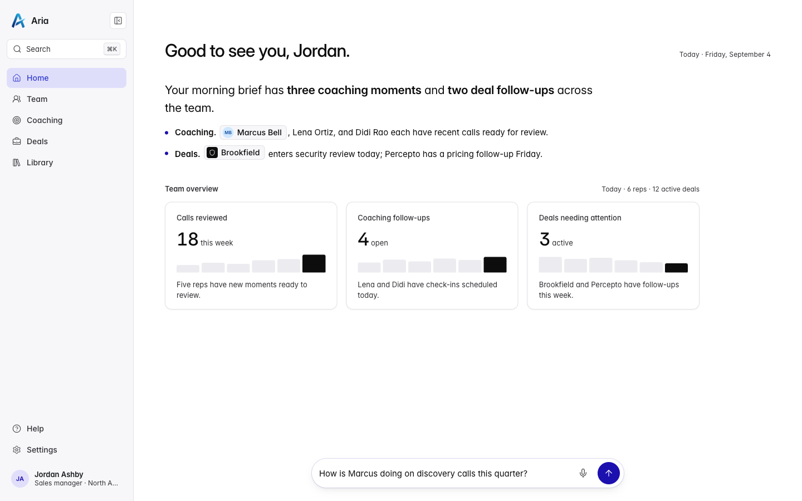
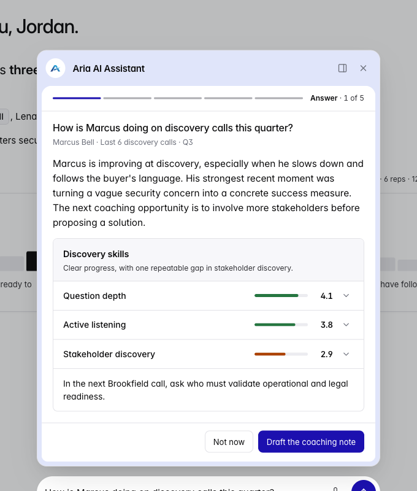
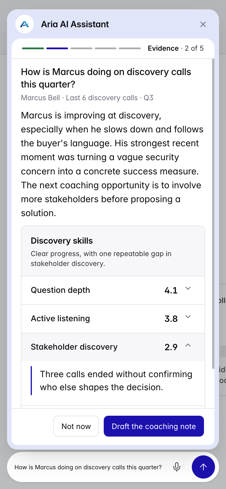
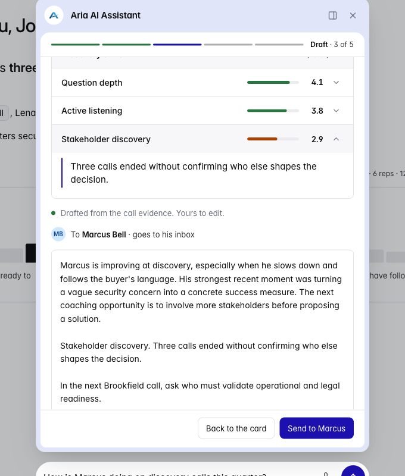
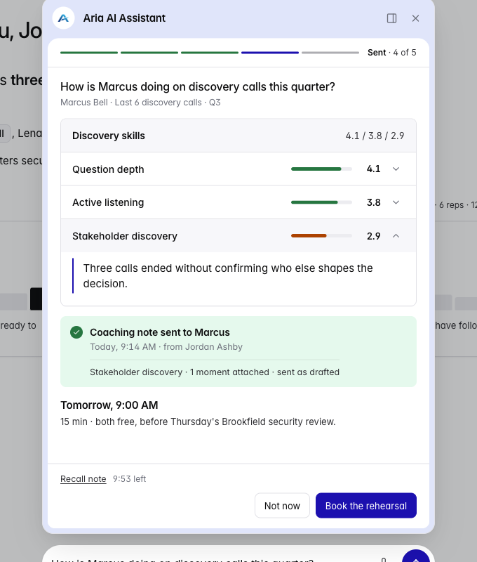
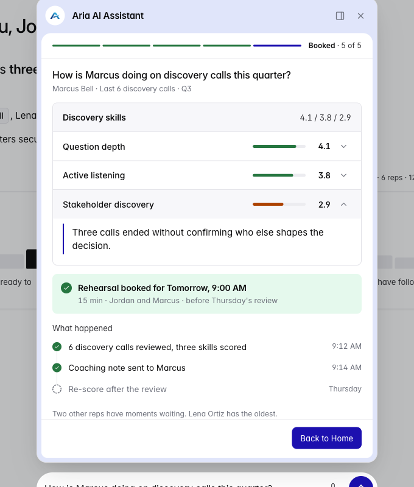
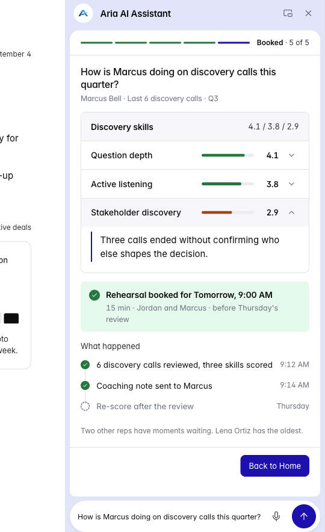
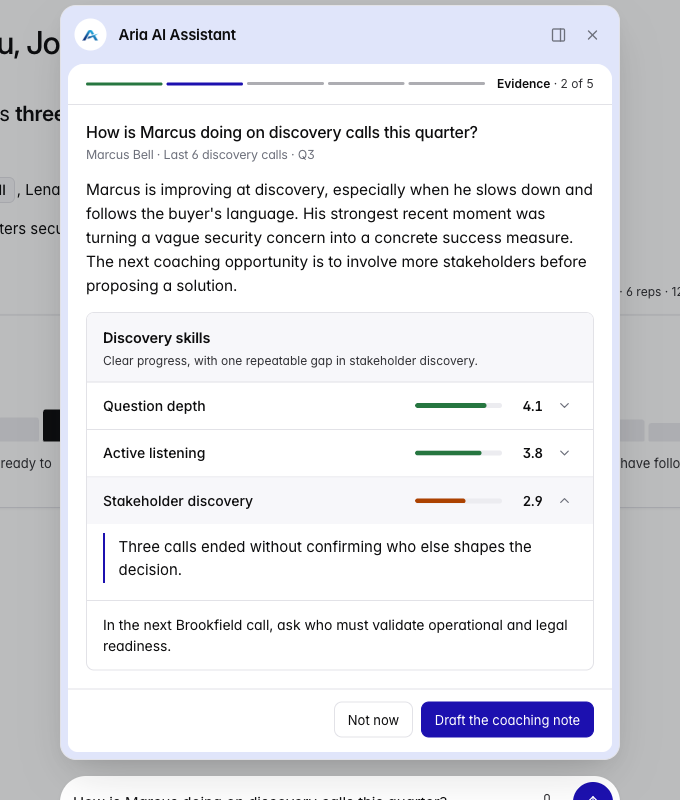
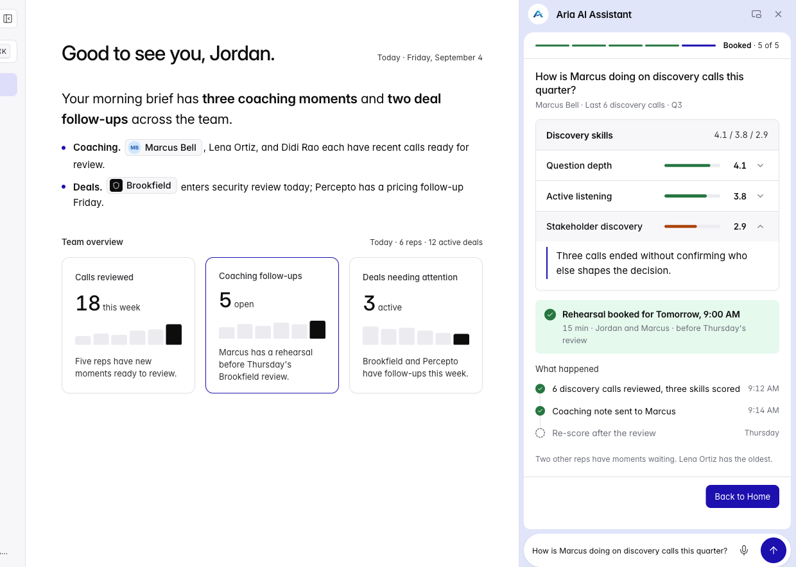

One question
One moment inside the shell, after Jordan asks how Marcus is doing on discovery calls this quarter.
Aria Sales Hub
Jordan Ashby manages the team. Marcus Bell is working the Brookfield deal. The assistant takes that question through a coaching note and a 15-minute rehearsal.

01 · The brief
One moment inside the shell, after Jordan asks how Marcus is doing on discovery calls this quarter.
One status, three sentences, one coaching card, then done. No second question and no extra data.
It was already built. The job was the experience after he asks.
02 · Ran it locally
The question bar sits at the bottom of Home. Jordan, Marcus, and the Brookfield deal are already on the page. I left that shell alone and designed what happens after he sends the question.

03 · The workflow
A discovery call is where he learns what the buyer needs, who else decides, and what success would look like.
Jordan manages the team. He reviews those calls to see what Marcus is doing well.
He needs one clear next step, not a pile of call notes.
04 · How assistants behave


05 · UX process
06 · Designed from the mock

b. The note Drafted from the call evidence
c. Send Only when he presses the button
d–e. Book, then Home 15 minutes, then back to Home
f. Dock, optional After Home, the answer would be gone07 · How the flow is built
Then he acts on the gap
Opening a score moves the stage from Answer to Evidence. One row stays open.
Dock is optional and lasts for this visit. Reopening starts over the brief.
Escape, Not now, and Recall close the sheet and return him to the question.
08 · Technical architecture
09 · Interaction decisions


10 · Accessibility
11 · AI workflow
12 · Design decisions
The coaching note should stay simple and crisp.
Tomorrow at 9:00 AM was already free for both of them.
A radar is for multivariate data: three or more quantitative variables. That dataset was not in the mock.
One open slot was enough. Booking is one confirmation.
He can see all five stages, and which one he is in.
He is about to coach someone, so the sentence behind the number is the part of an inspector worth keeping.
13 · Engineering decisions
14 · With more time
Today it says nothing was sent, then closes the assistant. The control promises an undo. It should put the note back in Draft.
He can read the reason. The practice data has no recording to open, so I would not invent a link that goes nowhere.
A benchmark beside each score is the next step in DECISIONS.md. That needs numbers we were not given.
The receipt still prints 9:12 and 9:14. Those should be the time he actually sent, not fixed copy.
The live change. I’ll make it the way I usually work, then try it on the page before I call it done.